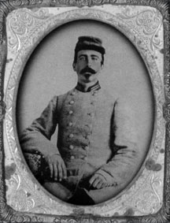

|

NAME: James Franklin Holliman
BORN: 1839
DIED: 1911
ALLEGIANCE: Confederate
HIGHEST RANK: First Lieutenant
UNIT: 58th Alabama Infantry Regiment
RECORD: Enlisted as a private in the 9th Alabama
Battalion, Company B, for one year. Participated in the
Mississippi campaign (Shiloh, Farmington and Blackland). He
reenlisted in September 1862 as a first lieutenant and was
transferred to Mobile, Ala. In April 1863, the 9th proceeded
to Tullahoma, Tenn. They had several engagements, especially
at Hoover's Gap. In July 1863, two additional companies were
attached to the 9th to form the 58th Alabama. In winning the
Battle of Chickamauga, they took great losses. The 58th
moved to Missionary Ridge, Tenn., and were overwhelmed on
November 25, 1863. Holliman was captured and spent the
remainder of the war in prison on Johnson's Island in Lake
Erie. He was paroled on June 13, 1865.
|
|
James Franklin Holliman was the second of 13 children
born to Uriah Holliman and Mary Polly Lucas Holliman. James
was born in Tuscaloosa County, Alabama, on January 28, 1839,
but Uriah soon moved the family north into Fayette County,
Alabama, where he obtained Federal homestead land for
farming.
When the clouds of war covered the South, a wave of
sympathetic enthusiasm swept over the family. Uriah and four
of his seven sons joined the Confederate Army. The war would
take its toll. Of the five who enlisted, only three
survived.
James enlisted for a year as a private in the 9th Alabama
Battalion, Company B, in Fayette, Ala., in September 1861.
The following spring, the 9th proceeded to Corinth, Miss.,
and was engaged at Shiloh and Farmington. At Blackland,
Miss., the battalion lost about 20 killed and wounded, and
disease wreaked havoc at Corinth and Okolona, Miss. Among
those who died at Okolona were Uriah and James' brother
Charles Daniel.
James Holliman reenlisted in the 9th Battalion in
September 1862 as a first lieutenant and was sent to Mobile,
Ala., remaining there until April 1863. At that time, the
battalion proceeded to Tullahoma, Tenn., and was placed in
Maj. Gen. Henry D. Clayton's brigade. The 9th was in several
small engagements, especially at Hoover's Gap. In July 1863,
at Tullahoma, two additional companies were attached and the
58th Alabama Infantry Regiment was formed. The 58th was in
the thick of the fighting at Chickamauga on September 19-20.
On the 19th, the 58th captured four pieces of artillery, and
on the 20th they broke the enemy line in a suicidal charge,
with the loss of 148 out of 254 men. In November the 58th
was merged with the 32nd Alabama.
The consolidated regiment had 400 present at Missionary
Ridge on November 25, 1863, but sustained 250 casualties.
Holliman was captured and shipped to a military prison in
Louisville, Ky., and then to the infamous prison for
Confederate officers at Johnson's Island, Lake Erie, near
Sandusky, Ohio. There he remained until he was paroled and
took the Oath of Allegiance on June 13, 1865. He was then
described as being 26 years of age and 5 feet 9 inches tall
with a dark complexion, dark hair and gray eyes.
After his release, Holliman returned to Fayette County to
resume farming. He became a schoolteacher and married
Rebecca Utley Stewart, his wartime sweetheart, on July 2,
1865.
"Becca" bore Holliman four children; she died in 1883. He
remained single until he was 57 (1896), when he married a
former student, Bertha Lee Powell, 20. She bore him five
children. Holliman, 67 when his last child was born, died in
1911.
Source: Civil War Times Illustrated
45:1 (February 2006), 10.
|